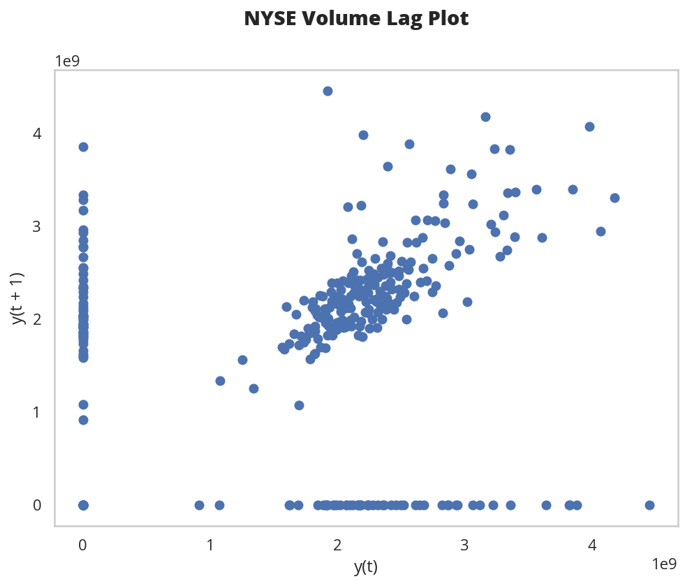
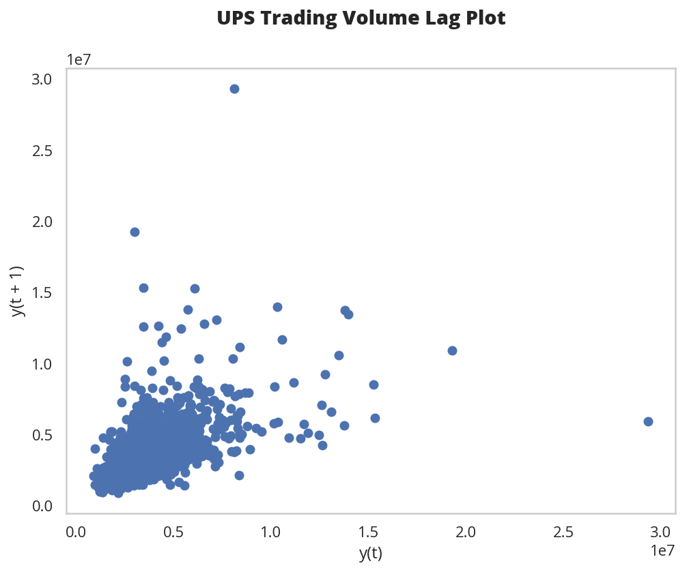
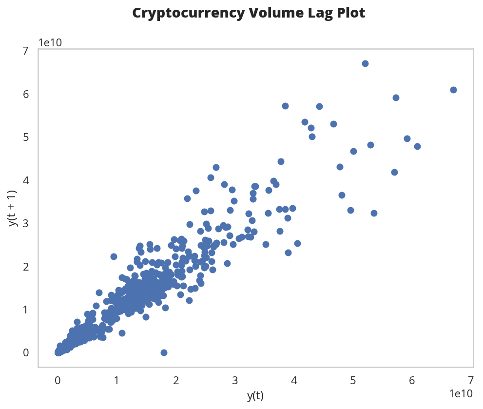
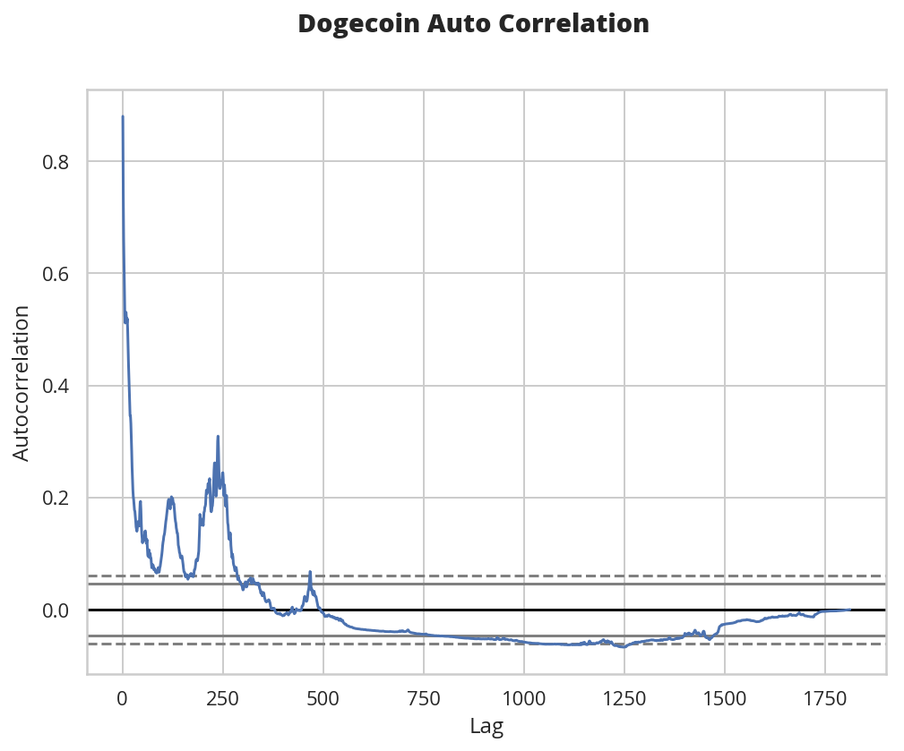

Kaggle On Time-Series Visualization
Table of Contents
Introduction
This is a walk-through of the kaggle notebook on Time-Series Plotting by Aleksey Bilogur.
Set Up
Imports
From Python
from datetime import datetime
from functools import partial
from pathlib import Path
import os
From PyPi
from dotenv import load_dotenv
from bokeh.io.doc import curdoc
from bokeh.models import CrosshairTool, HoverTool
from bokeh.themes import Theme
from bokeh.palettes import Category20
from holoviews import opts
from holoviews.plotting.links import RangeToolLink
from hvplot import hvPlot
from pandas.plotting import autocorrelation_plot, lag_plot
from tabulate import tabulate
import holoviews
import matplotlib
import matplotlib.pyplot as pyplot
import pandas
import seaborn
My Projects
from bartleby_the_penguin.tangles.embed_bokeh import EmbedBokeh
from graeae.tables import CountPercentage
Plotting
get_ipython().run_line_magic('matplotlib', 'inline')
get_ipython().run_line_magic('config', "InlineBackend.figure_format = 'retina'")
seaborn.set(style="whitegrid",
rc={"axes.grid": False,
"font.family": ["sans-serif"],
"font.sans-serif": ["Open Sans", "Latin Modern Sans", "Lato"],
"figure.figsize": (8, 6)},
font_scale=1)
Holoviews Backend
holoviews.extension("bokeh")
Bokeh
class Plots:
width = 1100
height = 600
font = "Open Sans"
font_size = "24pt"
line_width = 3
tools = ["hover"]
blue = seaborn.color_palette()[0]
light_blue = Category20[3][1]
red = seaborn.color_palette()[3]
yellow = seaborn.color_palette()[1]
green = seaborn.color_palette()[2]
gray = seaborn.color_palette()[7]
theme = Theme(json={
"attrs": {
"Figure": {
"text_font": "Open Sans",
"text_font_size": "18pt",
"line_color": Category20[3][0],
"plot_width": Plots.width,
"plot_height": Plots.height,
"tools": ["pan", "zoom_in", "hover", "reset"],
},
"Title": {
"text_font_style": "bold",
},
},
})
curdoc().theme = theme
Setup Libraries
load_dotenv()
table = partial(tabulate, headers="keys", tablefmt="orgtbl")
kaggle_path = Path(os.environ.get("KAGGLE")).expanduser()
assert kaggle_path.is_dir()
The Embedder
Embed = partial(
EmbedBokeh,
folder_path="../../files/posts/tutorials/kaggle-on-time-series-visualization/")
The Data
New York Stock Exchange Prices
nyse_path = kaggle_path.joinpath("nyse/prices.csv")
assert nyse_path.is_file()
nyse = pandas.read_csv(nyse_path, parse_dates=["date"])
nyse.info()
<class 'pandas.core.frame.DataFrame'> RangeIndex: 851264 entries, 0 to 851263 Data columns (total 7 columns): date 851264 non-null datetime64[ns] symbol 851264 non-null object open 851264 non-null float64 close 851264 non-null float64 low 851264 non-null float64 high 851264 non-null float64 volume 851264 non-null float64 dtypes: datetime64[ns](1), float64(5), object(1) memory usage: 45.5+ MB
nyse = nyse.set_index("date")
print(table(nyse.head()))
| date | symbol | open | close | low | high | volume |
|---|---|---|---|---|---|---|
| 2016-01-05 00:00:00 | WLTW | 123.43 | 125.84 | 122.31 | 126.25 | 2.1636e+06 |
| 2016-01-06 00:00:00 | WLTW | 125.24 | 119.98 | 119.94 | 125.54 | 2.3864e+06 |
| 2016-01-07 00:00:00 | WLTW | 116.38 | 114.95 | 114.93 | 119.74 | 2.4895e+06 |
| 2016-01-08 00:00:00 | WLTW | 115.48 | 116.62 | 113.5 | 117.44 | 2.0063e+06 |
| 2016-01-11 00:00:00 | WLTW | 117.01 | 114.97 | 114.09 | 117.33 | 1.4086e+06 |
The notebook describes this as an example of a "strong" date case because the dates act as an explicit index for the data and are, in this case, an aggregate for a day of trading.
UPS
Some of the correlational plots don't show anything meaningful when you use the market as a whole (I guess because different stocks are moving in different directions) so I'm going to pull out the UPS stock information to use later.
ups = nyse[nyse.symbol=="UPS"]
print(ups.shape)
(1762, 6)
Shelter Outcomes
shelter_path = kaggle_path.joinpath(
"austin-animal-center-shelter-outcomes/aac_shelter_outcomes.csv")
assert shelter_path.is_file()
shelter = pandas.read_csv(shelter_path, parse_dates=["datetime", "date_of_birth"])
shelter.info()
<class 'pandas.core.frame.DataFrame'> RangeIndex: 78256 entries, 0 to 78255 Data columns (total 12 columns): age_upon_outcome 78248 non-null object animal_id 78256 non-null object animal_type 78256 non-null object breed 78256 non-null object color 78256 non-null object date_of_birth 78256 non-null datetime64[ns] datetime 78256 non-null datetime64[ns] monthyear 78256 non-null object name 54370 non-null object outcome_subtype 35963 non-null object outcome_type 78244 non-null object sex_upon_outcome 78254 non-null object dtypes: datetime64[ns](2), object(10) memory usage: 7.2+ MB
Some of the columns are only identifiers (like a name) so we'll drop them to make it easier to inspect the data (although we aren't really going to do anything with it here anyway).
shelter = shelter[["outcome_type", "age_upon_outcome", "datetime",
"animal_type", "breed", "color", "sex_upon_outcome",
"date_of_birth"]]
print(table(shelter.head(), showindex=False))
| outcome_type | age_upon_outcome | datetime | animal_type | breed | color | sex_upon_outcome | date_of_birth |
|---|---|---|---|---|---|---|---|
| Transfer | 2 weeks | 2014-07-22 16:04:00 | Cat | Domestic Shorthair Mix | Orange Tabby | Intact Male | 2014-07-07 00:00:00 |
| Transfer | 1 year | 2013-11-07 11:47:00 | Dog | Beagle Mix | White/Brown | Spayed Female | 2012-11-06 00:00:00 |
| Adoption | 1 year | 2014-06-03 14:20:00 | Dog | Pit Bull | Blue/White | Neutered Male | 2013-03-31 00:00:00 |
| Transfer | 9 years | 2014-06-15 15:50:00 | Dog | Miniature Schnauzer Mix | White | Neutered Male | 2005-06-02 00:00:00 |
| Euthanasia | 5 months | 2014-07-07 14:04:00 | Other | Bat Mix | Brown | Unknown | 2014-01-07 00:00:00 |
The notebook describes this as an example of a "weak" date case because the dates are only there for record-keeping and, while they might be significant for modeling, aren't acting as an index for the records.
Cryptocurrency
currency_path = kaggle_path.joinpath("all-crypto-currencies/crypto-markets.csv")
assert currency_path.is_file()
currency = pandas.read_csv(currency_path, parse_dates=["date"])
currency = currency.set_index("date")
print(table(currency.head(), showindex=True))
| date | slug | symbol | name | ranknow | open | high | low | close | volume | market | close_ratio | spread |
|---|---|---|---|---|---|---|---|---|---|---|---|---|
| 2013-04-28 00:00:00 | bitcoin | BTC | Bitcoin | 1 | 135.3 | 135.98 | 132.1 | 134.21 | 0 | 1.48857e+09 | 0.5438 | 3.88 |
| 2013-04-29 00:00:00 | bitcoin | BTC | Bitcoin | 1 | 134.44 | 147.49 | 134 | 144.54 | 0 | 1.60377e+09 | 0.7813 | 13.49 |
| 2013-04-30 00:00:00 | bitcoin | BTC | Bitcoin | 1 | 144 | 146.93 | 134.05 | 139 | 0 | 1.54281e+09 | 0.3843 | 12.88 |
| 2013-05-01 00:00:00 | bitcoin | BTC | Bitcoin | 1 | 139 | 139.89 | 107.72 | 116.99 | 0 | 1.29895e+09 | 0.2882 | 32.17 |
| 2013-05-02 00:00:00 | bitcoin | BTC | Bitcoin | 1 | 116.38 | 125.6 | 92.28 | 105.21 | 0 | 1.16852e+09 | 0.3881 | 33.32 |
Grouping
Birth Dates
Per Date
Here's a plot of the birth dates of the animals in the shelter.
births = shelter.date_of_birth.value_counts()
births_peak = births.idxmax()
births = births.reset_index().sort_values(by="index")
births.columns = ["birth_date", "Births"]
hover = HoverTool(
tooltips=[
("Date", "@birth_date{%Y-%m-%d}"),
("Births", "@Births{0,0}"),
],
formatters= {"birth_date": "datetime",
"Births": "numeral"},
mode="vline",
)
line = holoviews.VLine(births_peak)
curve = holoviews.Curve(
births, ("birth_date", "Date of Birth"), "Births",
)
main = curve.relabel("Count of Births By Date").opts(labelled=["y"],
tools=[hover],
height=Plots.height,
ylabel="Births",
xaxis=None)
range_finder = curve.opts(height=100, yaxis=None, default_tools=[],
xlabel="Birth Dates")
link = RangeToolLink(range_finder, main)
combination = (main * line + range_finder * line)
layout = combination.opts(
opts.Layout(shared_axes=False, merge_tools=False, fontsize=Plots.font_size),
opts.Curve(width=Plots.width,
color=Category20[3][0],
fontsize=Plots.font_size,
line_width=Plots.line_width),
opts.VLine(color=Plots.red, line_dash="dotted")
).cols(1)
Embed(layout, "shelter_births")()
It lools like there was an upward trend until about 2016 when it started to taper off, but since we're counting by days there's a lot of variance so we're going to group the data using pandas' resample method.
Note: One interesting problem I found is that unless I zoom in I can't get my mouse to trigger the hover-tool for the day with the greatest value (May 5, 2014).
There's a couple of different ways to do the grouping of the days, but the simplest way is to take the count for each date using value_counts. This will leave us with a Series with the dates in the index and the counts as values. Once we have this we can aggregate the dates by year and then count how many births there were per year.
By Year
First I'll get the counts for each day using value_counts and print off the first values to see what it looks like. Calling reset_index changes the Series to a DataFrame with the dates as a column.
counts = shelter.date_of_birth.value_counts()
print(table(counts.head().reset_index(), showindex=False))
| index | date_of_birth |
|---|---|
| 2014-05-05 00:00:00 | 112 |
| 2015-09-01 00:00:00 | 110 |
| 2014-04-21 00:00:00 | 105 |
| 2015-04-28 00:00:00 | 104 |
| 2016-05-01 00:00:00 | 102 |
Now we can aggregate the birth-counts by year using resample.
year_counts = counts.resample("Y")
print(year_counts)
DatetimeIndexResampler [freq=<YearEnd: month=12>, axis=0, closed=right, label=right, convention=start, base=0]
Note that this is a grouper, we don't get what we want until we call a method (like
count) on it. In this case since we have value counts we want to sum all of the counts for a year (so we needsum).
Now I'm going to aggregate the yearly counts using the sum method.
sums = year_counts.sum()
Calling sum gives us a Series with the dates in the index and the sums as the values.
print(sums.head())
1991-12-31 1 1992-12-31 1 1993-12-31 1 1994-12-31 9 1995-12-31 7 Freq: A-DEC, Name: date_of_birth, dtype: int64
The idxmax method gives us the index of the greatest value and since the dates are in the index, using it will give us the date of the year with the most births, which I'll call sum_peak.
sum_peak = sums.idxmax()
As you may have noticed, all the dates are set for December 31, but for plotting it's better to have them set to January 1 so I'll set it here and do a some other cleanup.
sums = sums.reset_index()
sums.columns = ["birth_date", "Births"]
sum_peak = datetime(sum_peak.year, 1, 1)
sums["birth_date"] = sums.birth_date.apply(lambda date: datetime(date.year, 1, 1))
And now for the plot.
- The Tools
First set up the tools
hover = HoverTool( tooltips=[ ("Year", "@birth_date{%Y}"), ("Births", "@Births{0,0}"), ], formatters= {"birth_date": "datetime", "Births": "numeral"}, mode="vline", )
- The Plot Parts
Now I'll create our plotting objects.
The vertical line will mark the peak year.
line = holoviews.VLine(sum_peak, label=sum_peak.strftime("%Y"))
And I'm going to add an annotation to it.
x = datetime(sum_peak.year, 3, 1) text = holoviews.Text(x, sums.max()[1]/4, "Max Year: {}".format(sum_peak.year), halign="left")
Now our data-curve.
curve = holoviews.Curve( sums, ("birth_date", "Date of Birth"), "Births", )
Next I'll make two copies of the curve -
mainwill be the larger curve andrange_finderwill create a plot below it to let us select a range of dates which get linked using theRangeToolLink.main = curve.relabel("Births Per Year (1991- 2017)").opts( labelled=["y"], tools=[hover], xaxis=None, ylabel="Births", height=Plots.height) range_finder = curve.opts(height=100, yaxis=None, default_tools=[], xlabel="Year") link = RangeToolLink(range_finder, main)
Now combine the parts to make our visible plot.
combination = (line * main * text + line * range_finder)
This next bit is to set some styling on the plot.
- The Options
layout = combination.opts( opts.Layout(shared_axes=False, merge_tools=False, fontsize=Plots.font_size), opts.Curve(width=Plots.width, color=Plots.blue, padding=0.01, fontsize=Plots.font_size, line_width=Plots.line_width), opts.VLine(color=Plots.red, line_dash="dotted") ).cols(1)
- Embed
Finally, create the javascript and embed it in this notebook.
Embed(layout, "shelter_births_per_year")()
Lollipop Plot
An alternative way to look at this would be a lollipop plot.
# The Tools
hover = HoverTool(
tooltips=[
("Year", "@birth_date{%Y}"),
("Births", "@Births{0,0}"),
],
formatters= {"birth_date": "datetime",
"Births": "numeral"},
mode="vline",
)
# The Parts
line = holoviews.VLine(sum_peak, label=peak.strftime("%Y"))
spikes = holoviews.Spikes(sums, ("birth_date", "Date of Birth"), "Births")
circles = holoviews.Scatter(sums, "birth_date", "Births")
# The Range Finder
main = circles.relabel().opts(
labelled=["y"],
tools=[hover],
xaxis=None,
ylabel="Births",
height=Plots.height,
size=10,
padding=(0, (0, 0.1)))
range_finder = circles.opts(height=100,
yaxis=None,
default_tools=[],
size=5,
fontsize={"ticks": "14pt"},
xlabel="Year of Birth")
link = RangeToolLink(range_finder, main)
# The Layout
combination = (spikes * line * main + spikes * line * range_finder)
# The Styling Options
layout = combination.opts(
opts.Layout(shared_axes=False,
merge_tools=False,
title="Shelter Animal Births Per Year (1991- 2017)",
show_title=True,
fontsize=Plots.font_size),
opts.Spikes(width=Plots.width,
color=Plots.red,
fontsize=Plots.font_size,
line_width=Plots.line_width),
opts.Scatter(color=Plots.blue, fontsize={"ticks": "14pt"}, legend_position="left"),
opts.VLine(color=Plots.green),
).cols(1)
# The HTML and Javascript
Embed(layout, "births_per_year_spikes")()
Note that putting the title in the Layout changes the font. I was trying to set it to Open Sans but HoloViews is horribly documented for most things so I couldn't figure out how to do it.
Animal Shelter Outcomes
While knowing the birthdates of the animals in the shelter is interesting, what about the dates when their cases were resolved? I originally called this Animal Shelter Adoptions but "outcome" doesn't always mean "adopted", unfortunately.
CountPercentage(shelter.outcome_type)()
| Value | Count | Percentage |
|---|---|---|
| Adoption | 33112 | 42.32 |
| Transfer | 23499 | 30.03 |
| Return to Owner | 14354 | 18.35 |
| Euthanasia | 6080 | 7.77 |
| Died | 680 | 0.87 |
| Disposal | 307 | 0.39 |
| Rto-Adopt | 150 | 0.19 |
| Missing | 46 | 0.06 |
| Relocate | 16 | 0.02 |
I don't know what Disposal means, but it doesn't sound good. Neither does Missing, really, especially if there are any restaurants nearby. Anyway, on to the plotting. I'll aggregate the outcome-counts by year.
outcome_counts = shelter.datetime.value_counts()
outcomes = outcome_counts.resample("Y").sum()
print(table(outcome_counts.head().reset_index(), showindex=False))
outcomes = outcomes.reset_index()
outcomes.columns = ["date", "count"]
outcomes["date"] = outcomes.date.apply(lambda date: datetime(date.year, 1, 1))
| index | datetime |
|---|---|
| 2016-04-18 00:00:00 | 39 |
| 2015-08-11 00:00:00 | 25 |
| 2017-10-17 00:00:00 | 25 |
| 2015-11-17 00:00:00 | 22 |
| 2015-07-02 00:00:00 | 22 |
This next part isn't really necessary but I think keeping the names consistent is helpful, especially since I was struggling so much with HoloViews and didn't need the extra confusion about column-names being wrong.
sums = sums.rename(columns=dict(birth_date="date", Births="count"))
This is going to be like the previous plot but I'm going to add a crosshair tool to make it easier to see how things line up with the axis.
# The Tools
hover = HoverTool(
tooltips=[
("Year", "@date{%Y}"),
("Count", "@count{0,0}"),
],
formatters= {"date": "datetime",
"count": "numeral"},
mode="vline",
)
crosshairs = CrosshairTool(line_color=Plots.light_blue)
# The Parts
births = holoviews.Scatter(sums, "date", "count", label="Births")
outcome_circles = holoviews.Scatter(outcomes, "date", "count",
group="outcome", label="Outcomes")
spikes = holoviews.Spikes(outcomes, ("date", 'Year'), ("count", "Count"),
group="outcome")
# The Layout
combination = spikes * outcome_circles * births
# The Styling
layout = combination.opts(
opts.Layout(shared_axes=False,
height=Plots.height,
merge_tools=False,
show_title=True,
fontsize=Plots.font_size),
opts.Spikes(width=Plots.width,
height=Plots.height,
title="Shelter Animal Births vs Outcomes Per Year",
show_title=True,
fontsize=Plots.font_size,
padding=(0, (0, .1)),
color=Plots.blue,
line_width=Plots.line_width),
opts.Scatter("outcome", color=Plots.blue, size=10, legend_position="top_left"),
opts.Scatter(fontsize={"ticks": "14pt"}, color=Plots.red, size=10,
tools=[hover, crosshairs]),
)
# The HTML
Embed(layout, "outcome_lollipops")()
You can see that there are only six years of adoption outcomes although there are sixteen years of birth dates, with a sudden uptick to the peak year of 2014. It's interesting that the births drop off much faster than the outcomes - the animals seemed to be getting older for some reason.
Trading Volume
The previous plot was a count-plot. You can also use other summary-statistics like a mean to see how things changed over time. I'll plot the mean volume per year for the New York Stock Exchange.
volume = nyse.volume.resample("Y")
means = volume.mean().reset_index()
means["date"] = means.date.apply(lambda date: datetime(date.year, 1, 1))
Along with the standard deviations.
deviations = volume.std().reset_index()
means["two_sigma"] = means.volume + 2 * deviations.volume
And now our plot.
# The Tools
hover = HoverTool(
tooltips=[
("Year", "@date{%Y}"),
("Volume", "@volume{0,0.00}"),
],
formatters= {"date": "datetime",
"volume": "numeral",
},
mode="vline",
)
# The Parts
top_spread = holoviews.ErrorBars((means.date, means.volume, means.two_sigma),
group="volume")
volume_curve = holoviews.Curve(means,
("date", "Year"),
("volume", "Volume"),
group="volume")
zero_line = holoviews.HLine(0)
# The Layout
layout = volume_curve * top_spread * zero_line
# The Styling
layout = layout.opts(
opts.Layout(shared_axes=False,
height=Plots.height,
merge_tools=False,
show_title=True,
fontsize=Plots.font_size),
opts.Curve(width=Plots.width,
height=Plots.height,
title="Mean NYSE Trading Volume Per Year",
show_title=True,
fontsize=Plots.font_size,
padding=(0, (0, .1)),
color=Plots.blue,
line_width=Plots.line_width,
tools=[hover]),
opts.HLine(line_color=Plots.gray)
)
# The HTML
Embed(layout, "stock_mean_volume")()
While the standard deviation is important, in this case it's so large that it smashes the mean down flat (although maybe the fact that it's so large tells us that the mean isn't so accurate).
hover = HoverTool(
tooltips=[
("Year", "@date{%Y}"),
("Volume", "@volume{0,0.00}"),
],
formatters= {"date": "datetime",
"volume": "numeral"},
mode="vline",
)
volume_circles = holoviews.Scatter(means, "date", "volume")
volume_spikes = holoviews.Spikes(means, ("date", "Date"),
("volume", "Volume"))
combination = volume_spikes * volume_circles
crosshairs = CrosshairTool(line_color=Plots.light_blue, dimensions="height")
layout = combination.opts(
opts.Layout(shared_axes=False,
height=Plots.height,
merge_tools=False,
show_title=True,
fontsize=Plots.font_size),
opts.Spikes(width=Plots.width,
height=Plots.height,
title="NYSE Mean Annual Trading Volume",
show_title=True,
fontsize=Plots.font_size,
padding=(0, (0, .1)),
color=Plots.blue,
line_width=Plots.line_width),
opts.Scatter(color=Plots.blue,
size=10,
tools=[hover, crosshairs]),
)
Embed(layout, "stock_lollipops")()
I took the cross-hairs out of the plot with the standard deviations but it was (a little) more helpful for the lollipop plots because you have to be directly above the points to trigger the hover tool, whereas you can be above any part of a segment in the
Curveplot and it triggers the hover tool.
Lag Plots
The Lag Plot helps you check if there is a significance to the ordering of the data. You are plotting the value in the inputs vs the next value (e.g. one day against the following day). If there is no significance to the ordering then the plot will look random.
NYSE
The lag_plot function isn't one of the DataFrame methods so I don't think it will work with HoloViews, although I haven't tried yet.
volume = nyse.volume.resample("D")
figure, axe = pyplot.subplots()
figure.suptitle("NYSE Volume Lag Plot", weight="bold")
subplot = lag_plot(volume.sum().tail(365), ax=axe)

So, the center points do seem to show a relationship, as the next-days volume goes up along with the previous day's volume, but I don't know what those bands around 0 are. One thing I noticed is that there are holidays in the data.
print(volume.sum().index[-6])
2016-12-25 00:00:00
And there are also weekends in there.
print(volume.sum().index[-13].strftime("%a"))
Sun
So it's likely that there are days in there where there was no trading and so they won't correlate with the days that preceded the start of a break or the ones that followed the end of a break. I think. I don't really know if there's trading all year round.
volume_sums = volume.sum()
for day in volume_sums[volume_sums==0][-9:].index:
print("{} {}".format(day.strftime("%a"), day))
Sat 2016-12-03 00:00:00 Sun 2016-12-04 00:00:00 Sat 2016-12-10 00:00:00 Sun 2016-12-11 00:00:00 Sat 2016-12-17 00:00:00 Sun 2016-12-18 00:00:00 Sat 2016-12-24 00:00:00 Sun 2016-12-25 00:00:00 Mon 2016-12-26 00:00:00
So it does look like the zeros are weekends and holidays.
UPS
Here's what just the UPS trading volumes look like.
figure, axe = pyplot.subplots()
figure.suptitle("UPS Trading Volume Lag Plot", weight="bold")
subplot = lag_plot(ups.volume, ax=axe)

I don't know why but that makes it look better. I guess the market as a whole doesn't move quite so well together day by day as a single stock does.
Autcorrelation Plot
UPS
figure, axe = pyplot.subplots()
figure.suptitle("UPS Trading Volume Daily Autocorrelation", weight="bold")
subplot = autocorrelation_plot(ups.volume, ax=axe)

This plot shows the lag in relationship to correlation over different lag intervals. It looks like up to about 500 days of lag the correlation is positive but it starts to become more negative after that. The horizontal lines are the confidence intervals - the solid grey lines are the 95 % interval and the dashed grey lines are the 99% interval. The points that fall outside of these intervals are statistically significant.
Cryptocurrency
Lag Plot
crypto_daily = currency.volume.resample("D")
figure, axe = pyplot.subplots()
figure.suptitle("Cryptocurrency Volume Lag Plot", weight="bold")
subplot = lag_plot(crypto_daily.sum(), ax=axe)

Unlike the stock-exchange, the cryptocurrencies seem to move together and don't take days off.
Autocorrelation Plot
figure, axe = pyplot.subplots()
figure.suptitle("Dogecoin Auto Correlation", weight="bold")
dogecoin = currency[currency.name=="Dogecoin"]
subplot = autocorrelation_plot(dogecoin.volume, ax=axe)

If my understanding of how this plot works is correct, there is some kind of significance to lags of 125 and 250 days. Is this really true? Possibly.